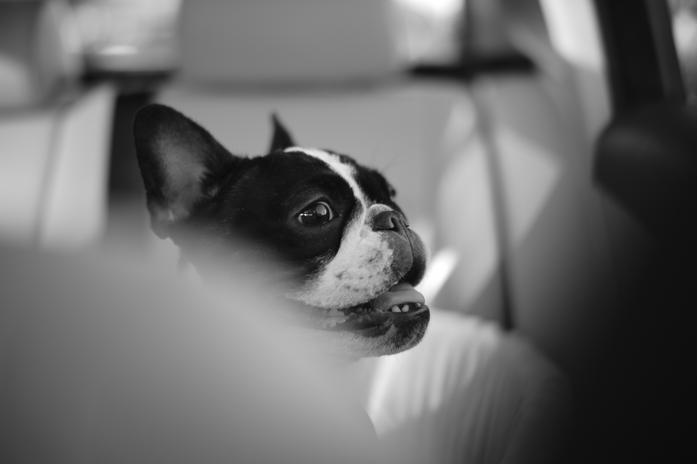

먹성이 좋기 때문에 게걸스럽게 먹는 걸 좋아하며, 자주 산책을 시켜주지 않으면 쉽게 비만에 걸린다.
영국산 불도그의 피를 이어받아 근친혼 등을 통해 인위적으로 개량된 품종이기 때문에 건강과 관련해 여러 가지 문제를 가지고 있는 비극적인 품종이다. 얼굴과 코가 납작한 단두종의 특성상 음식을 씹는데 어려움이 있고 호흡이 곤란해 자주 숨을 헐떡거린다. 근친혼으로 인한 유전적 결함 때문에 암을 비롯하여 유전적 원인에 의한 질환에 걸리기 쉽다. 척추 기형 등 척추 질환에 시달리는 경우도 많다. 불도그는 신체 구조상 스스로 교미와 출산이 불가능하며 유전병 때문에 수명도 짧은 편이다.
또 얼굴에 주름이 많고 침을 많이 흘리기 때문에 주름 사이나 입 주위에 세균 감염이 일어나기 매우 쉬운 견종이다. 때문에 주름 사이와 입 주변 청결에 특히 신경을 많이 써야하며 소홀히 했을 경우 쉽게 피부병에 걸린다. 또한 눈이 많이 돌출되어 있기 때문에 각막염 등 각종 안과 질환에 걸리기 쉽다.
단두종의 특성상 호흡이 곤란하기 때문에 잘 때 코를 많이 고는 견종이다.
이런 태생적 건강 문제 때문에 영국에서는 수의사들이 불도그나 퍼그 같은 단두종을 기르지 말라고 경고하는 캠페인에 나섰다. 영국 왕립 수의대 로웨나 패커 박사는 "당신의 입양이 퍼그나 불독을 고통 속에 살게 만들고 있다"며 "극단적인 신체적 특징을 가진 반려견을 기른다는 것은 개를 높은 위험에 밀어 넣는 것이다. 당장 단두종을 분양받는 일을 멈춰야 한다"고 강조했다.
